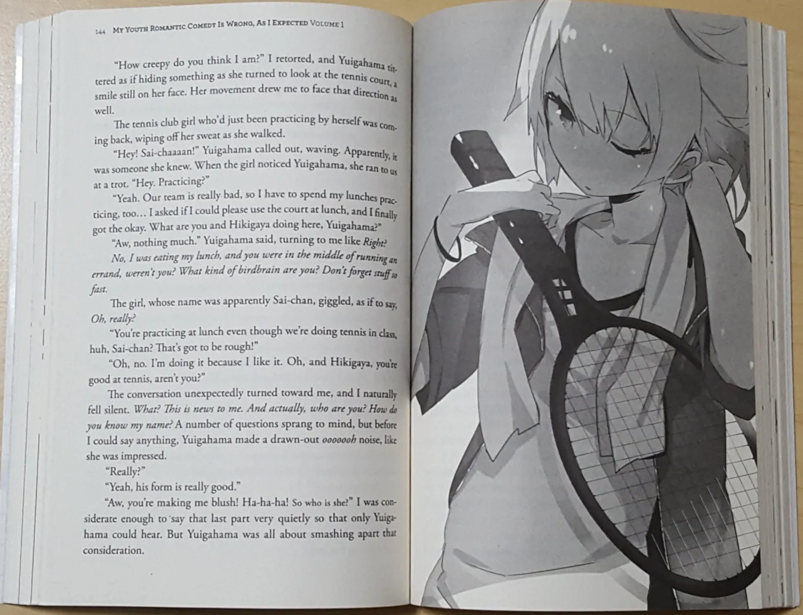

Light Novel

As light novels (ライトノベル raito noberu?, lit. romance(s) leve(s)) são romances ilustrados geralmente no estilo anime/mangá, compilados de revistas ou sites na internet. A expressão light novel é um wasei-eigo, termo japonês que é formado por palavras da língua inglesa. Light novels também são chamadas de ranobe (ラノベ?) ou rainobe (ライノベ?) para encurtar.
As light novels são publicadas a princípio como folhetins, geralmente publicados em revistas ou na internet para depois serem lançadas encadernadas em livros. Com a proliferação do hábito da leitura no Japão, as light novels cresceram para as mais variadas formas de publicação, desde os tradicionais folhetins em jornais, passando por revistas literárias como Gekkan Dragon Magazine, The Sneaker e Dengeki HP, ou revistas como Comptiq e Dengeki G's Magazine, com o avanço da tecnologia passaram a ser comuns na internet, tanto em sites profissionais quanto em blogs e até chegaram a lançar light novels para celular.
Um capitulo de Light novel geralmente tem em torno de 5000 a 7000 palavras. Quando completa o suficiente para se publicar um livro geralmente a marca de 40.000 palavras, se lança uma compilação geralmente de 5 capítulos por volta de 200 paginas. Não é uma regra absoluta, Alguns títulos tem marcas diferentes como 70.000 palavras por exemplo e acabam tendo muitos capítulos.
Nos últimos anos muitas light novels para adolescentes e jovens adultos têm sido adaptadas para outros meios, ganhando versões em mangá, anime, cinema e seriados para TV (Jdrama).
Um exemplo de light novels é a série Read or Die escrita por Hideyuki Kurata. Read or Die teve tanto versões em mangás quanto uma série em OVA e mais tarde uma em anime. A série em anime R.O.D the TV chegou a ser exibida no Brasil no canal pago Animax. Outro bom exemplo de light novel é a série Kara no Kyoukai escrita por Kinoko Nasu do grupo e empresa Type-Moon. Teve várias adaptações para cinema, contendo 7 filmes e atualmente uma versão mangá que está sendo exibida.
Fonte:Wikipédia